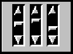
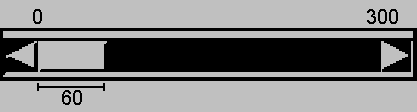

java.awt.Component
java.awt.Scrollbar
java.awt.Component
java.awt.Scrollbar
|
JavaTM 2 Platform Standard Ed. 6 |
|||||||||
| 上一个类 下一个类 | 框架 无框架 | |||||||||
| 摘要： 嵌套 | 字段 | 构造方法 | 方法 | 详细信息： 字段 | 构造方法 | 方法 | |||||||||
java.lang.Object
public class Scrollbar
Scrollbar 类描述了一个滚动条，这是大家都很熟悉的用户界面对象。滚动条提供了一个允许用户在一定范围的值中进行选择的便捷方式。可以将以下三个垂直滚动条用作滑动块控件，以选择红、绿和蓝三种颜色的分量：

在此例中，每个滚动条都是使用类似于下面的代码创建的：
redSlider=new Scrollbar(Scrollbar.VERTICAL, 0, 1, 0, 255); add(redSlider);
此外，滚动条还可以表示某一范围的值。例如，如果滚动条用于滚动文本，则可以使用“滑动块（bubble）”（也称为 "thumb" 或“滚动框”）的宽度来表示可视的文本数。下面是表示某一范围的滚动条：

在这个例子中，滑动块表示的值范围是可见量。此例中的水平滚动条可以用以下代码来创建：
ranger = new Scrollbar(Scrollbar.HORIZONTAL, 0, 60, 0, 300); add(ranger);
注意，滚动条的实际最大值是 maximum 减去 visible amount。在前面的例子中，因为 maximum 是 300，visible amount 是 60，所以实际最大值是 240。滚动条轨道的范围是 0 - 300。滑动块的左侧指示了滚动条的值。
通常，用户通过使用鼠标来改变滚动条的值。例如，用户可以上下拖动滚动条的滑动块，或单击滚动条的单位增量或块增量区域。键盘动作也能映射到滚动条。按照惯例，Page Up 和 Page Down 键等同于单击滚动条的块增量和块减量区域。
当用户改变滚动条的值时，滚动条接收一个 AdjustmentEvent 实例。滚动条处理此事件，将它传递给所有已注册的侦听器。
任何希望滚动条值发生变化时被通知的对象都应该实现包 java.awt.event 中定义的 AdjustmentListener 接口。调用 addAdjustmentListener 和 removeAdjustmentListener 方法能动态地添加或删除侦听器。
AdjustmentEvent 类定义了五种调整事件，如下所示：
AdjustmentEvent.TRACK。
AdjustmentEvent.UNIT_INCREMENT。
AdjustmentEvent.UNIT_DECREMENT。
AdjustmentEvent.BLOCK_INCREMENT。按照惯例，如果用户使用定义了 Page Up 键的键盘，则 Page Up 键是等效的。
AdjustmentEvent.BLOCK_DECREMENT。按照惯例，如果用户使用定义了 Page Down 键的键盘，则 Page Down 键是等效的。
为了获得向后兼容，JDK 1.0 事件系统也受到支持，但是该平台的新版本不鼓励使用它。JDK 1.1 中介绍的五种调整事件与以前该平台版本中的有关滚动条的五种事件对应。下面列表给出了调整事件类型和它对应的 JDK 1.0 中的替换事件类型。
AdjustmentEvent.TRACK 替换 Event.SCROLL_ABSOLUTE
AdjustmentEvent.UNIT_INCREMENT 替换 Event.SCROLL_LINE_UP
AdjustmentEvent.UNIT_DECREMENT 替换 Event.SCROLL_LINE_DOWN
AdjustmentEvent.BLOCK_INCREMENT 替换 Event.SCROLL_PAGE_UP
AdjustmentEvent.BLOCK_DECREMENT 替换 Event.SCROLL_PAGE_DOWN
注：我们建议只对值的选择使用 Scrollbar。如果想在容器中实现一个可滚动的组件，那么建议您使用 ScrollPane。如果使用 Scrollbar 来实现这一目的，那么可能会遇到绘制、键处理、大小调整和定位问题。
AdjustmentEvent,
AdjustmentListener,
序列化表格| 嵌套类摘要 | |
|---|---|
protected class |
Scrollbar.AccessibleAWTScrollBar
此类实现 Scrollbar 类的可访问性支持。 |
| 从类 java.awt.Component 继承的嵌套类/接口 |
|---|
Component.AccessibleAWTComponent, Component.BaselineResizeBehavior, Component.BltBufferStrategy, Component.FlipBufferStrategy |
| 字段摘要 | |
|---|---|
static int |
HORIZONTAL
指示一个水平滚动条的常量。 |
static int |
VERTICAL
指示一个垂直滚动条的常量。 |
| 从类 java.awt.Component 继承的字段 |
|---|
BOTTOM_ALIGNMENT, CENTER_ALIGNMENT, LEFT_ALIGNMENT, RIGHT_ALIGNMENT, TOP_ALIGNMENT |
| 从接口 java.awt.Adjustable 继承的字段 |
|---|
NO_ORIENTATION |
| 从接口 java.awt.image.ImageObserver 继承的字段 |
|---|
ABORT, ALLBITS, ERROR, FRAMEBITS, HEIGHT, PROPERTIES, SOMEBITS, WIDTH |
| 构造方法摘要 | |
|---|---|
Scrollbar()
构造一个新的垂直滚动条。 |
|
Scrollbar(int orientation)
构造一个具有指定方向的新滚动条。 |
|
Scrollbar(int orientation,
int value,
int visible,
int minimum,
int maximum)
构造一个新的滚动条，它具有指定的方向、初始值、可见量、最小值和最大值。 |
|
| 方法摘要 | ||
|---|---|---|
void |
addAdjustmentListener(AdjustmentListener l)
添加指定的调整侦听器，以接收发自此滚动条的 AdjustmentEvent 实例。 |
|
void |
addNotify()
创建 Scrollbar 的同位体。 |
|
AccessibleContext |
getAccessibleContext()
获取与此 Scrollbar 相关的 AccessibleContext。 |
|
AdjustmentListener[] |
getAdjustmentListeners()
返回在此滚动条上所有已注册调整侦听器组成的数组。 |
|
int |
getBlockIncrement()
获取此滚动条的块增量。 |
|
int |
getLineIncrement()
已过时。 从 JDK version 1.1 开始，由 getUnitIncrement() 取代。 |
|
|
getListeners(Class<T> listenerType)
返回目前已在此 Scrollbar 上注册为 FooListener 的所有对象组成的数组。 |
|
int |
getMaximum()
获取此滚动条的最大值。 |
|
int |
getMinimum()
获取此滚动条的最小值。 |
|
int |
getOrientation()
返回此滚动条的方向。 |
|
int |
getPageIncrement()
已过时。 从 JDK version 1.1 开始，由 getBlockIncrement() 取代。 |
|
int |
getUnitIncrement()
获取此滚动条的单位增量。 |
|
int |
getValue()
获取此滚动条的当前值。 |
|
boolean |
getValueIsAdjusting()
如果该值作为用户执行动作的结果正处于更改过程中，则返回 true。 |
|
int |
getVisible()
已过时。 从 JDK version 1.1 开始，由 getVisibleAmount() 取代。 |
|
int |
getVisibleAmount()
获取此滚动条的可见量。 |
|
protected String |
paramString()
返回表示此 Scrollbar 当前状态的字符串表示形式。 |
|
protected void |
processAdjustmentEvent(AdjustmentEvent e)
处理此滚动条上发生的调整事件，方法是将其指派到任意已注册的 AdjustmentListener 对象。 |
|
protected void |
processEvent(AWTEvent e)
处理在滚动条上发生的事件。 |
|
void |
removeAdjustmentListener(AdjustmentListener l)
移除指定的调整侦听器，不再接收发自此滚动条的 AdjustmentEvent 实例。 |
|
void |
setBlockIncrement(int v)
设置此滚动条的块增量。 |
|
void |
setLineIncrement(int v)
已过时。 从 JDK version 1.1 开始，由 setUnitIncrement(int) 取代。 |
|
void |
setMaximum(int newMaximum)
设置此滚动条的最大值。 |
|
void |
setMinimum(int newMinimum)
设置此滚动条的最小值。 |
|
void |
setOrientation(int orientation)
设置此滚动条的方向。 |
|
void |
setPageIncrement(int v)
已过时。 从 JDK version 1.1 开始，由 setBlockIncrement() 取代。 |
|
void |
setUnitIncrement(int v)
设置此滚动条的单位增量。 |
|
void |
setValue(int newValue)
将此滚动条的值设置为指定值。 |
|
void |
setValueIsAdjusting(boolean b)
设置 valueIsAdjusting 属性。 |
|
void |
setValues(int value,
int visible,
int minimum,
int maximum)
设置此滚动条的四个属性值： value、visibleAmount、minimum 和 maximum。 |
|
void |
setVisibleAmount(int newAmount)
设置此滚动条的可见量。 |
|
| 从类 java.lang.Object 继承的方法 |
|---|
clone, equals, finalize, getClass, hashCode, notify, notifyAll, wait, wait, wait |
| 字段详细信息 |
|---|
public static final int HORIZONTAL
public static final int VERTICAL
| 构造方法详细信息 |
|---|
public Scrollbar()
throws HeadlessException
| 属性 | 描述 | 默认值 |
|---|---|---|
| 方向 | 指示滚动条是垂直的 或水平的 |
Scrollbar.VERTICAL |
| 值 | 控制滚动条的滑动块 位置的值 |
0 |
| 可见量 | 滚动条范围的可见量， 通常由滚动条的滑动块 的大小表示 |
10 |
| 最小值 | 滚动条的最小值 | 0 |
| 最大值 | 滚动条的最大值 | 100 |
| 单元增量 | 在按下 Line Up 或 Line Down 键时， 或者单击滚动条 的末端箭头时， 值更改的量 |
1 |
| 块增量 | 在按下 Page Up 或 Page Down 键时， 或在滑动块的两侧 单击滚动条轨道时， 值更改的量 |
10 |
HeadlessException - 如果 GraphicsEnvironment.isHeadless() 返回 true。GraphicsEnvironment.isHeadless()
public Scrollbar(int orientation)
throws HeadlessException
orientation 参数必须是 Scrollbar.HORIZONTAL 或 Scrollbar.VERTICAL 这两个值之一，它们分别指示滚动条是水平滚动条，还是垂直滚动条。
orientation - 指示滚动条的方向
IllegalArgumentException - 在提供不合法的 orientation 参数值时
HeadlessException - 如果 GraphicsEnvironment.isHeadless() 返回 true。GraphicsEnvironment.isHeadless()
public Scrollbar(int orientation,
int value,
int visible,
int minimum,
int maximum)
throws HeadlessException
orientation 参数必须是 Scrollbar.HORIZONTAL 或 Scrollbar.VERTICAL 这两个值之一，分别指示滚动条是水平滚动条，还是垂直滚动条。
为此构造方法提供的参数受到 setValues(int, int, int, int) 中描述的约束 (Constraints) 的限制。
orientation - 指示滚动条的方向。value - 滚动条的初始值visible - 滚动条的可见量，通常由滑动块的大小表示minimum - 滚动条的最小值maximum - 滚动条的最大值
IllegalArgumentException - 当提供不合法的 orientation 参数值时
HeadlessException - 如果 GraphicsEnvironment.isHeadless() 返回 true。setValues(int, int, int, int),
GraphicsEnvironment.isHeadless()| 方法详细信息 |
|---|
public void addNotify()
Scrollbar 的同位体。此同位体允许在不更改 Scrollbar 功能的情况下修改其外观。
Component 中的 addNotifyComponent.isDisplayable(),
Component.removeNotify()public int getOrientation()
Adjustable 中的 getOrientationScrollbar.HORIZONTAL 或 Scrollbar.VERTICALsetOrientation(int)public void setOrientation(int orientation)
orientation - 此滚动条的方向，可以是 Scrollbar.HORIZONTAL 或 Scrollbar.VERTICAL
IllegalArgumentException - 如果为 orientation 提供的值是非法值getOrientation()public int getValue()
Adjustable 中的 getValuegetMinimum(),
getMaximum()public void setValue(int newValue)
如果指定的值小于当前 minimum 或大于当前 maximum - visibleAmount，则对 minimum 或 maximum - visibleAmount 进行适当的替换。
通常，程序应该只通过调用 setValues 更改滚动条的值。setValues 方法同时且同步地设置滚动条的最小值、最大值、可见量和值属性，因此它们是一致的。
调用此方法不会触发 AdjustmentEvent。
Adjustable 中的 setValuenewValue - 滚动条的新值setValues(int, int, int, int),
getValue(),
getMinimum(),
getMaximum()public int getMinimum()
Adjustable 中的 getMinimumgetValue(),
getMaximum()public void setMinimum(int newMinimum)
在调用 setMinimum 时，最小值会发生更改，并且其他值（包括最大值、可视量和滚动条的当前值）都会随新的最小值发生一致的更改。
通常，程序应该只通过调用 setValues 更改滚动条的最小值。setValues 方法同时且同步地设置滚动条的最小值、最大值、可见量和值属性，因此它们是相互一致的。
注意，将最小值设置为 Integer.MAX_VALUE 将导致新的最小值被设置为 Integer.MAX_VALUE - 1。
Adjustable 中的 setMinimumnewMinimum - 此滚动条的新的最小值setValues(int, int, int, int),
setMaximum(int)public int getMaximum()
Adjustable 中的 getMaximumgetValue(),
getMinimum()public void setMaximum(int newMaximum)
在调用 setMaximum 时，最大值会发生更改，并且其他值（包括最小值、可见量和滚动条的当前值）都会随新的最大值发生一致的更改。
通常，程序应该只通过调用 setValues 更改滚动条的最大值。setValues 方法同时且同步地设置滚动条的最小值、最大值、可见量和值属性，因此它们是相互一致的。
注意，将最大值设置为 Integer.MIN_VALUE 将导致新的最大值被设置为 Integer.MIN_VALUE + 1。
Adjustable 中的 setMaximumnewMaximum - 此滚动条的新的最大值setValues(int, int, int, int),
setMinimum(int)public int getVisibleAmount()
当使用滚动条来选择某一范围的值时，可以使用可见量来表示当前可视值的范围。滚动条的滑动块（也称为 thumb 或滚动框）的大小通常给出了滚动条范围与可见量之间关系的直观表示。
在滚动条的滑动块不可移动时（例如，当它充斥滚动条轨道的整个长度时，或者当禁用滚动条时），它可能不被显示。是否显示滑动块不会影响 getVisibleAmount 返回的值。
Adjustable 中的 getVisibleAmountsetVisibleAmount(int)@Deprecated public int getVisible()
getVisibleAmount() 取代。
public void setVisibleAmount(int newAmount)
当使用滚动条来选择某一范围的值时，可以使用可见量来表示当前可视值的范围。滚动条的滑动块（也称为 thumb 或滚动框）的大小通常给出了滚动条范围与可见量之间关系的直观表示。
在滚动条的滑动块不可移动时（例如，当它充斥滚动条轨道的整个长度时，或者当禁用滚动条时），它可能不被显示。是否显示滑动块不会影响 getVisibleAmount 返回的值。
如果提供的可见量小于 one 或大于当前 maximum - minimum，则对 one 或 maximum - minimum 进行适当的替换。
通常，程序应该只通过调用 setValues 更改滚动条的值。setValues 方法同时且同步地设置滚动条的最小值、最大值、可见量和值属性，因此它们是一致的。
Adjustable 中的 setVisibleAmountnewAmount - 新的可见量getVisibleAmount(),
setValues(int, int, int, int)public void setUnitIncrement(int v)
单位增量是用户激活滚动条的单位增量区域时增加或减少的值，通常通过鼠标或键盘来实现，滚动条将该动作作为一个调整事件来接收。单位增量必须大于零。试图将单位增量设置为小于 1 的值将使该值被设置为 1。
Adjustable 中的 setUnitIncrementv - 滚动条值增加或减少的量getUnitIncrement()@Deprecated public void setLineIncrement(int v)
setUnitIncrement(int) 取代。
public int getUnitIncrement()
单位增量是用户激活滚动条的单位增量区域时增加或减少的值，通常通过鼠标或键盘来实现，滚动条将该动作作为一个调整事件来接收。单位增量必须大于零。
Adjustable 中的 getUnitIncrementsetUnitIncrement(int)@Deprecated public int getLineIncrement()
getUnitIncrement() 取代。
public void setBlockIncrement(int v)
块增量是用户激活滚动条的块增量区域时增加或减少的值，通常通过鼠标或键盘来实现，滚动条将该动作作为一个调整事件来接收。块增量必须大于零。试图将块增量设置为小于 1 的值将使该值被设置为 1。
Adjustable 中的 setBlockIncrementv - 滚动条值增加或减少的量getBlockIncrement()@Deprecated public void setPageIncrement(int v)
setBlockIncrement() 取代。
public int getBlockIncrement()
块增量是用户激活滚动条的块增量区域时增加或减少的值，通常通过鼠标或键盘来实现，滚动条将该动作作为一个调整事件来接收。块增量必须大于零。
Adjustable 中的 getBlockIncrementsetBlockIncrement(int)@Deprecated public int getPageIncrement()
getBlockIncrement() 取代。
public void setValues(int value,
int visible,
int minimum,
int maximum)
value、visibleAmount、minimum 和 maximum。如果为这些属性提供的值是不一致或不正确的，则将更改它们，确保它们一致。
此方法同时且同步地设置滚动条的四个属性值，以确保它们相互一致。它强制执行了以下约束：maximum 必须大于 minimum，maximum - minimum 不能大于 Integer.MAX_VALUE，visibleAmount 必须大于零。visibleAmount 不能大于 maximum - minimum，value 不能小于 minimum，并且 value 不能大于 maximum - visibleAmount
调用此方法不会触发 AdjustmentEvent。
value - 当前窗口的位置visible - 滚动条的可见量minimum - 滚动条的最小值maximum - 滚动条的最大值setMinimum(int),
setMaximum(int),
setVisibleAmount(int),
setValue(int)public boolean getValueIsAdjusting()
valueIsAdjusting 属性的值setValueIsAdjusting(boolean)public void setValueIsAdjusting(boolean b)
valueIsAdjusting 属性。
b - 新的调整正处于进行 (adjustment-in-progress) 状态getValueIsAdjusting()public void addAdjustmentListener(AdjustmentListener l)
AdjustmentEvent 实例。如果 l 为 null，则不会抛出异常并且不执行任何动作。
有关 AWT 的线程模型的详细信息，请参阅 AWT 线程问题。
Adjustable 中的 addAdjustmentListenerl - 调整侦听器removeAdjustmentListener(java.awt.event.AdjustmentListener),
getAdjustmentListeners(),
AdjustmentEvent,
AdjustmentListenerpublic void removeAdjustmentListener(AdjustmentListener l)
AdjustmentEvent 实例。如果 l 为 null，则不会抛出异常并且不执行任何动作。
有关 AWT 的线程模型的详细信息，请参阅 AWT 线程问题。
Adjustable 中的 removeAdjustmentListenerl - 调整侦听器addAdjustmentListener(java.awt.event.AdjustmentListener),
getAdjustmentListeners(),
AdjustmentEvent,
AdjustmentListenerpublic AdjustmentListener[] getAdjustmentListeners()
AdjustmentListener，如果当前没有已注册的调整侦听器，则返回一个空数组addAdjustmentListener(java.awt.event.AdjustmentListener),
removeAdjustmentListener(java.awt.event.AdjustmentListener),
AdjustmentEvent,
AdjustmentListenerpublic <T extends EventListener> T[] getListeners(Class<T> listenerType)
Scrollbar 上注册为 FooListener 的所有对象组成的数组。FooListener 是用 addFooListener 方法注册的。
可以使用 class 字面值来指定 listenerType 参数，如 FooListener.class。例如，可以使用以下代码来查询 Scrollbar c 的鼠标侦听器：
MouseListener[] mls = (MouseListener[])(c.getListeners(MouseListener.class));如果不存在这样的侦听器，则此方法将返回一个空数组。
Component 中的 getListenerslistenerType - 所请求的侦听器类型；此参数应该指定一个从 java.util.EventListener 继承的接口
FooListener 注册的所有对象组成的数组，如果尚未添加这样的侦听器，则返回一个空数组
ClassCastException - 如果 listenerType 未指定一个实现 java.util.EventListener 的类或接口Component.getComponentListeners(),
Component.getFocusListeners(),
Component.getHierarchyListeners(),
Component.getHierarchyBoundsListeners(),
Component.getKeyListeners(),
Component.getMouseListeners(),
Component.getMouseMotionListeners(),
Component.getMouseWheelListeners(),
Component.getInputMethodListeners(),
#getPropertyChangeListenerprotected void processEvent(AWTEvent e)
AdjustmentEvent 实例，则此方法将调用 processAdjustmentEvent 方法。否则，它将调用其超类的 processEvent 方法。
注意，如果事件参数为 null，则行为是不确定的，并且可能导致异常。
Component 中的 processEvente - 事件AdjustmentEvent,
processAdjustmentEvent(java.awt.event.AdjustmentEvent)protected void processAdjustmentEvent(AdjustmentEvent e)
AdjustmentListener 对象。
如果没有在组件上启用调整事件，则不调用此方法。出现以下情况之一时启用调整事件：
addAdjustmentListener 注册 AdjustmentListener 对象。
enableEvents 启用调整事件。
注意，如果事件参数为 null，则行为是不确定的，并且可能导致异常。
e - 调整事件AdjustmentEvent,
AdjustmentListener,
addAdjustmentListener(java.awt.event.AdjustmentListener),
Component.enableEvents(long)protected String paramString()
Scrollbar 当前状态的字符串表示形式。此方法仅用于调试目的，对于各个实现，所返回字符串的内容和格式可能有所不同。返回的字符串可以为空，但不可以为 null。
Component 中的 paramStringpublic AccessibleContext getAccessibleContext()
Scrollbar 相关的 AccessibleContext。对于滚动条，AccessibleContext 采用的是 AccessibleAWTScrollBar 的形式。如有必要，可以创建一个新的 AccessibleAWTScrollBar 实例。
Accessible 中的 getAccessibleContextComponent 中的 getAccessibleContextScrollBar 的 AccessibleContext 的 AccessibleAWTScrollBar
|
JavaTM 2 Platform Standard Ed. 6 |
|||||||||
| 上一个类 下一个类 | 框架 无框架 | |||||||||
| 摘要： 嵌套 | 字段 | 构造方法 | 方法 | 详细信息： 字段 | 构造方法 | 方法 | |||||||||
版权所有 2008 Sun Microsystems, Inc. 保留所有权利。请遵守GNU General Public License, version 2 only。